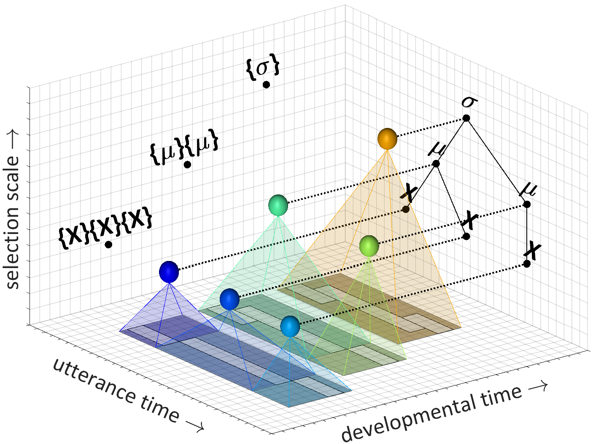
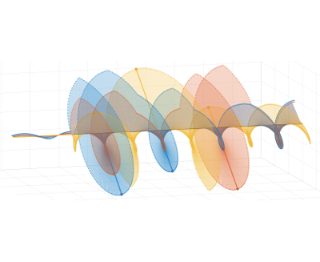
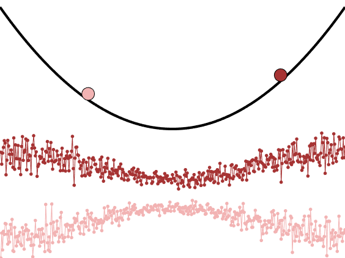
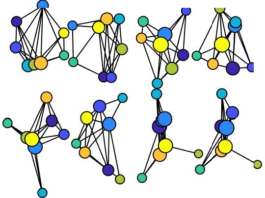

My research revolves primarily around understanding how linguistic patterns can arise from interactions between dynamical systems, as opposed to operations on symbolic structures

Phonological structure appears to be hierarchical because there are developmental changes in the sizes of coordinative structures. Phonological variation in the sizes of these structures is conditioned on language, speaker, and style.
Syntax with oscillators and energy levels

Syntactic patterns arise from a mechanism which transiently stabilizes a relative energy hierarchy. The energy hierarchy governs a diverse set of conceptual systems which are coupled and oscillatory.

Articulatory timing can vary substantially, even during the course of an experiment. Fluctuations in timing patterns reflect arousal, which can modulate interactions between phonatory, articulatory, and postural systems.

Every communicative interaction has the potential to change us. By studying the co-evolution of social and linguistic systems in controlled experiments we can gain a better understanding of how language patterns evolve in time and in space.
Papers
[2026]A mode-coupling theory of phonological organization
Tilsen, S. Preprint. doi: 10.31234/osf.io/2vyx9_v1.
[2026]Ambisyllabicity as decoupling of constriction formation and release
Tilsen, S. Under review.
[2026]Unpredictable temporal feedback perturbation dissociates mismatch detection from correction
Zhao, F. & Tilsen, S. Journal of Phonetics, 118: 101519. doi: 10.1016/j.wocn.2026.101519.
[2026]Mapping the good voice: linguistic applications to the future of voice coaching for performance
Shipley, M., Reade, A., Tilsen, S., & Babel, M. Voice and Speech Review, pp. 1-17. doi: 10.1080/23268263.2026.2720698.
[2026]Phrasal rhythmicity and the sources of temporal intermittency in speech
Tilsen, S. Rhythms of Speech and Language, pp. 274-295. Chapter 20. Cambridge University Press. doi: 10.1017/9781009295888.020.
[2025]The Gesture-Field-Register (GFR) framework for modeling F0 control
Kim, S.-E. & Tilsen, S. Journal of Phonetics, 110: 101410. doi: 10.1016/j.wocn.2025.101410.
[2025]Thai speakers time lexical tones to supralaryngeal articulatory events
Burroni, F. & Tilsen, S. Journal of Phonetics, 108: 101389. doi: 10.1016/j.wocn.2024.101389.
[2025]Envelope-based metrics reveal speech rhythm development tendencies in Brazilian L2 English learners
Teixeira, L. A. S., Tilsen, S., Lima, R. M., & Arantes, P. Preprint. doi: 10.31234/osf.io/nemqb_v1.
[2024]Planning for the future and reacting to the present: Proactive and reactive F0 adjustments in speech
Kim, S.-E. & Tilsen, S. Journal of Phonetics, 104: 101322. doi: 10.1016/j.wocn.2024.101322.
[2024]Internal speech is faster than external speech: evidence for feedback-based temporal control
Tilsen, S. Cognition, 244: 105713. doi: 10.1016/j.cognition.2023.105713.
[2023]Probability and randomness in phonology: Deep vs. shallow stochasticity
Tilsen, S. Studies in Phonetics, Phonology, and Morphology. doi: 10.17959/sppm.2023.29.2.247.
[2023]Looking within events: examining internal temporal structure with local relative rate
Tilsen, S. & Tiede, M. Journal of Phonetics, 100: 101264. doi: 10.1016/j.wocn.2023.101264.
[2023]Parameters of unit-based measures of speech rate
Tilsen, S. & Tiede, M. Speech Communication, 150: 73-97. doi: 10.1016/j.specom.2023.05.006.
[2023]Hierarchical distinctions in the production and perception of nuclear tunes in American English
Cole, J., Steffman, J., Shattuck-Hufnagel, S., & Tilsen, S. Laboratory Phonology, 14(1). doi: 10.16995/labphon.9437.
[2023]A preliminary study of speech rhythm differences as markers of stuttering persistence in preschool-age children
Erdemir, A., Walden, T., Mefferd, A., Tilsen, S., & Jones, R. M. Journal of Speech, Language, and Hearing Research, 66(3): 931-950. doi: 10.1044/2022_JSLHR-22-00126.
[2023]EchoNose: Sensing Mouth, Breathing and Tongue Gestures inside Oral Cavity using a Non-contact Nose Interface
Sun, R., Zhou, X., Steeper, B., Zhang, R., Yin, S., Li, K., Wu, S., Tilsen, S., Guimbretiere, F., & Zhang, C. Proceedings of the 2023 International Symposium on Wearable Computers, pp. 22-26. Association for Computing Machinery. doi: 10.1145/3594738.3611358.
[2023]Morpho-phonological effects on the phonetic characteristics of tense consonants in Korean compounds
Kwon, C. D., Tilsen, S., & Whitman, J. Proc. of the 20th International Congress of Phonetic Sciences.
[2023]Investigations of F0 control: pitch targets vs pitch register
Kim, S.-E. & Tilsen, S. Proc. of the 20th International Congress of Phonetic Sciences.
[2022]An informal logic of feedback-based temporal control
Tilsen, S. Frontiers in Human Neuroscience, 16: 851991. doi: 10.3389/fnhum.2022.851991.
[2022]Relaxation, Percolation, and Non-Spontaneous Fluctuation of Linguistic Behavior in a Quasi-Isolated System
Tilsen, S. Frontiers in Physics, Social Physics, 10: 801740. doi: 10.3389/fphy.2022.801740.
[2022]An investigation of functional relations between speech rate and phonetic variables
Kim, S.-E. & Tilsen, S. Journal of Phonetics, 93: 101152. doi: 10.1016/j.wocn.2022.101152.
[2022]The online effect of clash is durational lengthening, not prominence shift: Evidence from Italian
Burroni, F. & Tilsen, S. Journal of Phonetics, 91: 101124. doi: 10.1016/j.wocn.2021.101124.
[2022]Shape matters: Machine classification and listeners' perceptual discrimination of American English intonational tunes
Cole, J., Tilsen, S., & Steffman, J. Proc. Speech Prosody 2022, pp. 297-301. doi: 10.21437/SpeechProsody.2022-61.
[2022]Interpreting phonetic evidence for hierarchical organization of prosodic phrases
Kim, S.-E. & Tilsen, S. Cornell Working Papers in Phonetics and Phonology. doi: 10.13140/RG.2.2.14146.61120.
[2021]Localizing category-related information in speech with multi-scale analyses
Tilsen, S., Kim, S.-E., & Wang, C. PLoS ONE, 16(1): e0258178. doi: 10.1371/journal.pone.0258178.
[2021]Temporal differences between high vowels and glides are more robust than spatial differences
Burgdorf, D. & Tilsen, S. Journal of Phonetics, 88: 101073. doi: 10.1016/j.wocn.2021.101073.
[2021]Articulatory characteristics of Icelandic voiced fricative lenition: gradience, categoricity, and speaker/gesture-specific effects
Stefansdottir, B., Burroni, F., & Tilsen, S. Proc. Interspeech 2021. doi: 10.21437/Interspeech.2021-1903.
[2021]Compensation for altered feedback in vowels and glides
Burgdorf, D. & Tilsen, S. Proc. of the 12th International Seminar on Speech Production.
[2021]Temporal localization of syntactically conditioned prosodic information
Kim, S.-E. & Tilsen, S. Proc. of the 12th International Seminar on Speech Production. doi: 10.13140/RG.2.2.31377.66409.
[2021]Nonlinear effects of speech rate on articulatory timing in singletons and geminates
Tilsen, S. & Hermes, A. Proc. of the 12th International Seminar on Speech Production, pp. 56-59. doi: 10.13140/RG.2.2.30443.05926.
[2021]Cross-linguistic timing contrast in geminates: a rate-independent perspective
Hermes, A., Tilsen, S., & Ridouane, R. Proc. of the 12th International Seminar on Speech Production, pp. 52-55. doi: 10.13140/RG.2.2.18040.26889.
[2020]Detecting anticipatory information in speech with signal chopping
Tilsen, S. Journal of Phonetics, 82: 100996. doi: 10.1016/j.wocn.2020.100996.
[2020]Incongruencies between phonological theory and phonetic measurement
Mücke, D., Hermes, A., & Tilsen, S. Phonology, 37(1): 133-170. doi: 10.1017/S0952675720000068.
[2020]Prominence clash does not induce rhythmic adjustments in Italian
Burroni, F. & Tilsen, S. Proc. Speech Prosody 2020, pp. 571-575. doi: 10.21437/SpeechProsody.2020-117.
[2020]Speech rate and syntactically conditioned influences on prosodic boundaries
Kim, S.-E. & Tilsen, S. Proc. Speech Prosody 2020, pp. 434-438. doi: 10.21437/SpeechProsody.2020-89.
[2020]Exploratory investigations of SVO sentence production: evidence for category-specific interference effects
Tilsen, S. Cornell Working Papers in Phonetics and Phonology. doi: 10.13140/RG.2.2.17421.56802.
[2020]A different view of gestural activation: learning gestural parameters and activation with an RNN
Tilsen, S. Cornell Working Papers in Phonetics and Phonology. doi: 10.13140/RG.2.2.30839.65444.
[2019]Motoric mechanisms for the emergence of non-local phonological patterns
Tilsen, S. Frontiers in Psychology, 10: 2143. doi: 10.3389/fpsyg.2019.02143.
[2019]Space and time in models of speech rhythm
Tilsen, S. Annals of The New York Academy of Sciences, 1453(1): 47-66. doi: 10.1111/nyas.14102.
[2019]Syntax with oscillators and energy levels
Tilsen, S. Language Science Press. doi: 10.5281/zenodo.2625683.
[2019]Strength and structure: coupling tones with oral constriction gestures
Mücke, D., Hermes, A., & Tilsen, S. Proc. Interspeech 2019, pp. 914-918. doi: 10.21437/Interspeech.2019-2650.
[2019]Boards for automated referential communication task
Enzinna, N. & Tilsen, S. Cornell Working Papers in Phonetics and Phonology. doi: 10.5281/zenodo.3724619.
[2018]Analysis of Speech Production Real-time MRI
Ramanarayanan, V., Tilsen, S., Proctor, M., Toger, J., Goldstein, L., Nayak, K., & Narayanan, S. Computer Speech & Language, 52: 1-22. doi: 10.1016/j.csl.2018.04.002.
[2018]Three mechanisms for modeling articulation: selection, coordination, and intention
Tilsen, S. Cornell Working Papers in Phonetics and Phonology. doi: 10.5281/zenodo.3724496.
[2017]Exertive modulation of speech and articulatory phasing
Tilsen, S. Journal of Phonetics, 64: 34-50. doi: 10.1016/j.wocn.2017.03.001.
[2016]Shared representations underlie metaphonological judgments and speech motor control
Tilsen, S. & Cohn, A. Laboratory Phonology: Journal of the Association for Laboratory Phonology, 7(1): 14. doi: 10.5334/labphon.52.
[2016]Selection and coordination: the articulatory basis for the emergence of phonological structure
Tilsen, S. Journal of Phonetics, 55: 53-77. doi: 10.1016/j.wocn.2015.11.005.
[2016]Anticipatory Posturing of the Vocal Tract Reveals Dissociation of Speech Movement Plans from Linguistic Units
Tilsen, S., Spincemaille, P., Xu, B., Doerschuk, P., Luh, W.-M., Feldman, E., & Wang, Y. PLoS ONE, 11(1): e0146813. doi: 10.1371/journal.pone.0146813.
[2016]A shared control parameter for F0 and intensity
Tilsen, S. Proc. Speech Prosody 2016, pp. 1066-1070. doi: 10.21437/SpeechProsody.2016-219.
[2016]Early Prosodic Manifestations of Disfluency
Li, J. & Tilsen, S. Proc. Speech Prosody 2016, pp. 1235-1239. doi: 10.21437/SpeechProsody.2016-254.
[2016]Interaction between lexical tone and intonation: An EMA study
Yi, H. & Tilsen, S. Proc. Interspeech 2016, pp. 2448-2452. doi: 10.21437/Interspeech.2016-662.
[2016]Correlations between speech behavior and social network structure in a constrained vocabulary game
Tilsen, S. Cornell Working Papers in Phonetics and Phonology. doi: 10.5281/zenodo.3726002.
[2015]Real-time articulatory biofeedback with electromagnetic articulography
Tilsen, S., Das, D., & McKee, B. Linguistics Vanguard, 1(1): 39-55. doi: 10.1515/lingvan-2014-1006.
[2015]Structured nonstationarity in articulatory timing
Tilsen, S. Proc. of the 18th International Congress of Phonetic Sciences.
[2015]Relation between syllable count judgments and durations of English liquid rimes
Cohn, A. & Tilsen, S. Proc. of the 18th International Congress of Phonetic Sciences.
[2015]Phonetic evidence for two types of disfluency
Li, J. & Tilsen, S. Proc. of the 18th International Congress of Phonetic Sciences.
[2015]The articulatory tone-bearing unit: Gestural coordination of lexical tone in Thai
Karlin, R. & Tilsen, S. POMA, 22: 060006. doi: 10.1121/2.0000089.
[2015]Gestural timing in Mandarin tone sandhi
Yi, H. & Tilsen, S. POMA, 22: 060003. doi: 10.1121/2.0000029.
[2015]A real-time MRI investigation of anticipatory posturing in prepared responses
Tilsen, S., Spincemaille, P., Xu, B., Doerschuk, P., Karlin, R., Yi, H., Feldman, E., Luh, W., & Wang, Y. POMA, 22: 060001. doi: 10.1121/2.0000006.
[2015]Speech and social network dynamics in a constrained vocabulary game: design and hypotheses
Tilsen, S. Cornell Working Papers in Phonetics and Phonology. doi: 10.5281/zenodo.3726185.
[2014]Selection and coordination of articulatory gestures in temporally constrained production
Tilsen, S. Journal of Phonetics, 44: 26-46. doi: 10.1016/j.wocn.2013.12.004.
[2014]Some people are eager to be heard: anticipatory posturing in speech production
Tilsen, S., Spincemaille, P., Xu, B., Doerschuk, P., Karlin, R., Yi, H., Feldman, E., Luh, W., & Wang, Y. 168th Meeting of the Acoustical Society of America Lay Language Papers.
[2014]Syllable count judgments and durations of liquid rimes in English
Tilsen, S., Cohn, A., & Ricciardi, E. Cornell Working Papers in Phonetics and Phonology. doi: 10.5281/zenodo.3726289.
[2014]Selection-coordination theory
Tilsen, S. Cornell Working Papers in Phonetics and Phonology. doi: 10.5281/zenodo.3726282.
[2013]A dynamical model of hierarchical selection and coordination in speech planning
Tilsen, S. PLoS ONE, 8(4): e62800. doi: 10.1371/journal.pone.0062800.
[2013]Speech rhythm analysis with decomposition of the amplitude envelope: Characterizing rhythmic patterns within and across languages
Tilsen, S. & Arvaniti, A. Journal of the Acoustical Society of America, 134(1): 628-639. doi: 10.1121/1.4807565.
[2013]Inhibitory mechanisms in speech planning maintain and maximize contrast
Tilsen, S. In A. Yu (Ed.), Origins of Sound Patterns: Approaches to Phonologization, pp. 112-127. Oxford: Oxford University Press. doi: 10.1093/acprof:oso/9780199573745.003.0005.
[2013]Comparison of native and non-native consonant articulation with real-time magnetic resonance imaging of the vocal tract
Tilsen, S., Xu, B., Spincemaille, P., Srivastava, M., Doerschuk, P., & Wang, Y. POMA, 19: 060246. doi: 10.1121/1.4799204.
[2013]Acoustic and articulatory evidence for the phonological status of liaison consonants
L'Esperance, M.-J. & Tilsen, S. POMA, 19: 060245. doi: 10.1121/1.4801074.
[2013]Imitation of intonational gestures: a preliminary report
Tilsen, S., Burgess, D., & Lantz, E. Cornell Working Papers in Phonetics and Phonology. doi: 10.5281/zenodo.3726927.
[2012]Articulatory gestures are individually selected in production
Tilsen, S. & Goldstein, L. Journal of Phonetics, 40: 764-779. doi: 10.1016/j.wocn.2012.08.005.
[2012]Utterance preparation and stress clash: planning prosodic alternations
Tilsen, S. In S. Fuchs, M. Weirich, D. Pape, & P. Perrier (Eds.), Speech planning and dynamics, pp. 119-156. Frankfurt am Main: Peter Lang Verlag. doi: 10.3726/978-3-653-01438-9/7.
[2012]Acoustic analysis of the effects of metrical regularity on interval durations
Tilsen, S., Cibelli, E., Kang, S., Houde, J., & Nagarajan, S. Cornell Working Papers in Phonetics and Phonology. doi: 10.5281/zenodo.3726943.
[2012]A cross-linguistic investigation of articulatory coordination in word-initial consonant clusters
Tilsen, S., Zec, D., Bjorndahl, C., Butler, B., L'Esperance, M. J., Fisher, A., Heimisdottir, L., Renwick, M., & Sanker, C. Cornell Working Papers in Phonetics and Phonology. doi: 10.5281/zenodo.3726936.
[2011]Effects of syllable stress on articulatory planning observed in a stop-signal experiment
Tilsen, S. Journal of Phonetics, 39: 642-659. doi: 10.1016/j.wocn.2011.04.002.
[2011]Metrical regularity facilitates speech planning and production
Tilsen, S. Laboratory Phonology, 2(1): 185-218. doi: 10.1515/labphon.2011.006.
[2011]The phonetics of laryngealization in Yucatec Maya
Avelino, H., Shin, E., & Tilsen, S. In H. Avelino (Ed.), New perspectives in Mayan linguistics, pp. 1-20. Newcastle upon Tyne: Cambridge Scholars Publishing.
[2010]Automated measurement of vowel formants in the Buckeye Corpus
Yao, Y., Tilsen, S., Sprouse, R., & Johnson, K. Gengo Kenkyu (Journal of the Linguistic Society of Japan), 138: 99-113.
[2009]Multi-timescale dynamical interactions between speech rhythm and gesture
Tilsen, S. Cognitive Science, 33: 839-879. doi: 10.1111/j.1551-6709.2009.01037.x.
[2009]Subphonemic and cross-phonemic priming in vowel shadowing: evidence for the involvement of exemplars in production
Tilsen, S. Journal of Phonetics, 37(3): 276-296. doi: 10.1016/j.wocn.2009.03.004.
[2009]Toward a dynamical interpretation of hierarchical linguistic structure
Tilsen, S. UC Berkeley Phonology Lab Annual Report, pp. 462-512. doi: 10.5070/P74BD1F63G.
[2008]Low-frequency Fourier analysis of speech rhythm
Tilsen, S. & Johnson, K. Journal of the Acoustical Society of America, 124(2): EL34-39. doi: 10.1121/1.2947626.
[2008]Relations between speech rhythm and segmental deletion
Tilsen, S. Proc. of the Annual Meeting of the Chicago Linguistic Society, 44(1): 221-223.
[2008]Preliminary results of a stop-signal experiment
Tilsen, S. UC Berkeley Phonology Lab Annual Report, pp. 250-268. doi: 10.5070/P77TC2T8Q3.
[2007]Vowel-to-vowel coarticulation and dissimilation in response-priming
Tilsen, S. UC Berkeley Phonology Lab Annual Report, pp. 416-458. doi: 10.5070/P78971K261.
[2007]Low-frequency Fourier analysis of speech rhythm
Tilsen, S. & Johnson, K. UC Berkeley Phonology Lab Annual Report, pp. 686-712. doi: 10.5070/P79601X7VT.
[2006]Rhythmic coordination in repetition disfluency: a harmonic timing effect
Tilsen, S. UC Berkeley Phonology Lab Annual Report, pp. 73-114.
[2006]Multiple attractors in grammaticalization: evidence from Kuki Thaadow verbal morphology
Tilsen, S. M.A. qualifying paper.